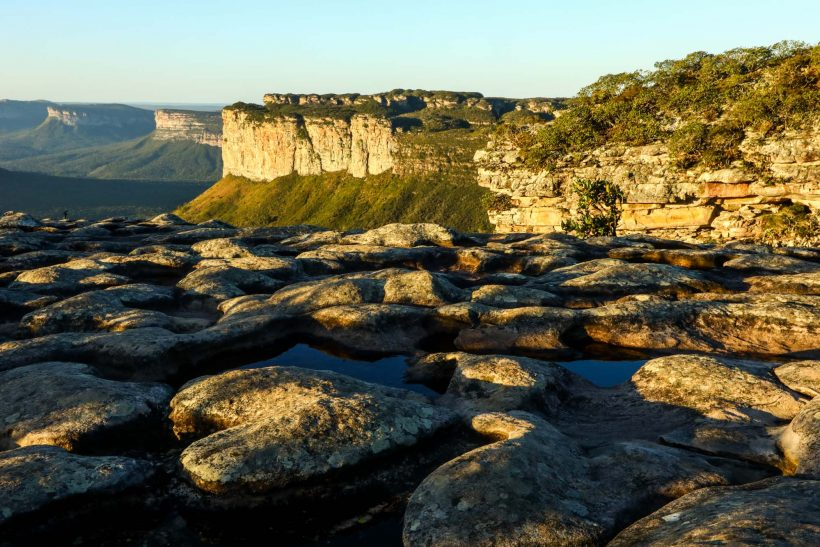
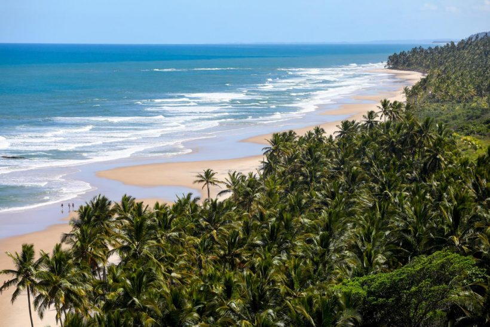

Espalhados pelos nove estados da região estão alguns dos mais famosos pontos turísticos do nosso país.
É tanta cidade
bonita e lugares paradisíacos que provavelmente serão necessárias várias idas para conhecer os principais destinos do
Nordeste!
Para te ajudar a pensar nas próximas viagens para o Nordeste, vamos citar alguns exewmplos, com os melhores destinos.
A Chapada Diamantina é um dos principais destinos brasileiros para quem curte o ecoturismo. É impossível ficar indiferente diante das cachoeiras enormes, de cores e formatos diversos, grutas de água cristalina, trilhas, paredões rochosos perfeitos para escaladas e diversos mirantes naturais que nos entregam a imensidão das paisagens
As lagoas de água doce entre as dunas formam um cenário único em todo o mundo e é impossível não se emocionar ao chegar no topo da paisagem e ver a imensidão dos Lençóis Maranhenses“, descreve a editora Monique Renne no guia que escreveu sobre um dos mais lindos destinos do Nordeste. Prepare-se para mergulhos em lagoas paradisíacas, passeios em meio às dunas e um pôr do sol de tirar o fôlego de qualquer um.

Vegetação bem preservada, faixas de areia praticamente inabitadas e uma cidade animada, cheia de restaurantes, lojas, bares e festas dão fama a Itacaré, um dos destinos mais procurados da Costa do Cacau, no litoral sul da Bahia . São treze praias principais para conhecer durante o descanso na cidade, algumas acessíveis de carro e outras por belas trilhas em meio à Mata Atlântica. Tem praia para todos os gostos!
